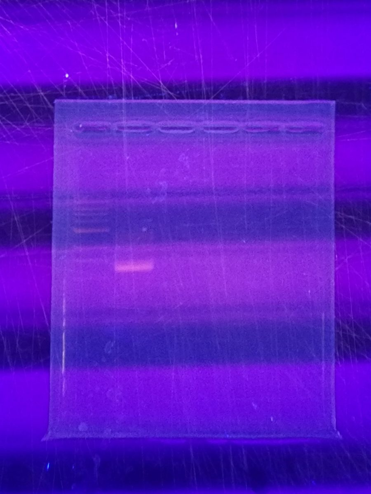

PCR set-ups for common polymerases
Reaction compositions and notes for Taq, KOD Xtreme, Q5, Phusion and a Taq:Pfu mix, and when to use each.
Primer stocks below are 10 µM.
Taq-based master mix (GoTaq): checking colonies and lysates
Low fidelity. Do not use for cloning. Supplied as a 2X mix containing nucleotides, salts, enzyme and loading dye. See also colony PCR.
| Component | Volume |
|---|---|
| 2X GoTaq Master Mix | 5 µL |
| Forward primer | 0.5 µL |
| Reverse primer | 0.5 µL |
| DMSO | 0.5 µL |
| Water | 2.5 µL |
| Template | 1 µL |
You can edit the template and water volumes according to template concentration, as long as final reaction volume per tube is 10 µL.
KOD Xtreme: high-fidelity, GC-rich cloning
Extension at 68 °C, not 72 °C, at about 1 min/kb.
| Component | Volume |
|---|---|
| KOD Xtreme polymerase | 1 µL |
| Forward primer | 1.5 µL |
| Reverse primer | 1.5 µL |
| KODX dNTPs | 10 µL |
| KODX buffer | 25 µL |
| Water | 10 µL |
| Template | 1 µL |
This is ideal for amplifying GC-rich templates for downstream applications.

Be careful about prolonged UV exposure: UV damages the DNA, so keep imaging time short, especially if you plan to use the DNA afterwards.
Q5: high fidelity, AT- or GC-rich templates
| Component | Volume |
|---|---|
| Q5 polymerase | 0.5 µL |
| Forward primer | 2.5 µL |
| Reverse primer | 2.5 µL |
| Q5 dNTPs (10 mM) | 1 µL |
| Q5 buffer | 10 µL |
| Q5 high GC enhancer | 10 µL |
| Water | 21.5 µL |
| Template | 1 µL |
A cycling program is given in the Gibson assembly protocol.
Phusion: high fidelity and processivity
Not well optimized for GC-rich DNA. Extension about 15 s/kb. There are two buffers: HF (higher fidelity) and GC (lower fidelity, for GC-rich organisms).
10:1 Taq:Pfu mix
Balances the flexibility of Taq with some proofreading by Pfu. Use when Phusion has failed, especially in stitching reactions.
Where it usually fails
When a PCR fails, the usual cause is an annealing temperature that does not suit the primers. The first thing to try is a gradient PCR across 50–70 °C (see Gibson assembly). Check also your template concentration (should not exceed 1,000 ng), the age and # of freeze-thaw cycles of your working primers, and your extension time. If you have smeary bands, make sure you’re not adding polymerase until right before you place the tubes in the thermocycler. Also consider a gradient PCR.
PCRpolymerasecloningGoTaqQ5KODPhusion